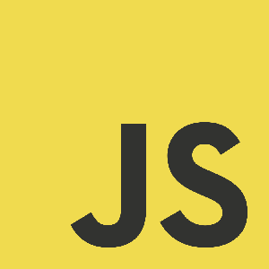

Komitet Ecma TC39 rozwija przed nami dywan.
Dywan po którym Ty i ja wkrótce będziemy stąpali.
Na dziś dzień jeszcze ten dywan nie został rowinięty do końca,
dlatego gdy chcesz poczuć jak to jest po nim chodzić
musisz wykorzystać linoleum, które jest tylko skromnym zamiennikiem.
Linoleum w tej historii jest transpiler np. Babel.js bądź Traceur.
Dywanem jest ECMAScript 6
Key Features
Classes
Modules
Let scoping
Template literals
Destructuring
Default parameters
Logos

JS LogoECMAScript 6 Logo
Więcej na temat loga JavaScript na moim blogu: piecioshka.pl